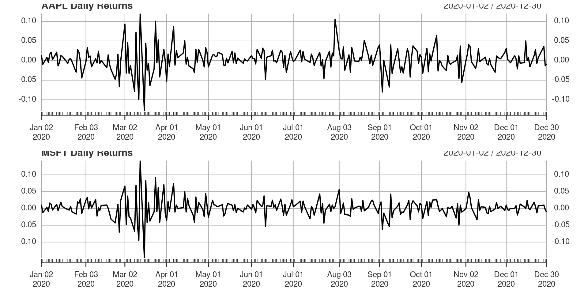
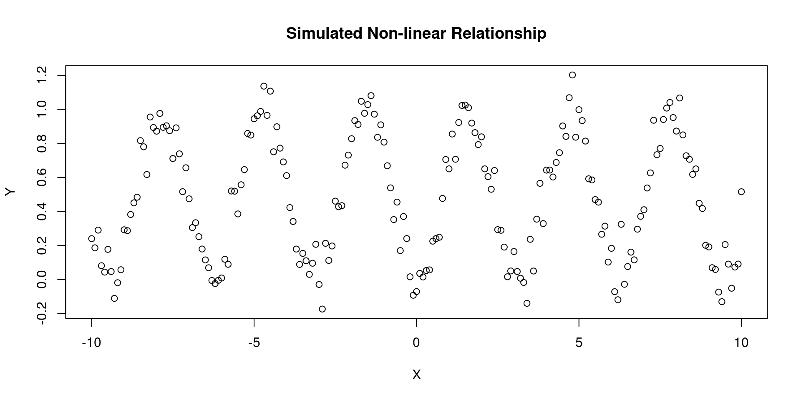

How information theory can help solve real-world financial problems
Outline
Distance metrics
Correlation based distance metrics
Shannon’s entropy
Marginal, conditional, joint
Experimental evidence
Financial problem investigation
Distance Metrics
Many problems in finance require the clustering of variables or observations:
Factor investing, relative value analysis (e.g., forming quality minus junk portfolios)
Risk management, portfolio construction (e.g., deriving the efficient frontier)
Dimensionality reduction (e.g., decomposing bond return drivers)
Modelling of multicollinear systems (e.g., computing p-values)
Distance Metrics
So Far We Have Studied…
• The important numerical properties of the empirical correlation (and by extension, covariance) matrix.
Critical Limitations of Correlation
• Despite its virtues, correlation suffers from several critical limitations as a measure of codependency.
Overcoming These Limitations
• In this lecture, we will overcome these limitations by reviewing information theory concepts that underlie many modern marvels.
Information Theory Concepts
• Internet, mobile phones, file compression, video streaming, and encryption.
Why We Looked Beyond Correlation
• None of these inventions would have been possible if researchers had not looked beyond correlations to understand codependency.
Claude Shannon’s Entropy
🔍 Information Theory Applications in Finance
• As it turns out, information theory in general, and the concept of Shannon’s entropy in particular, also have useful applications in finance. 💡
• The key idea behind entropy is to quantify the amount of uncertainty associated with a random variable. 🔍
• Information theory is also essential to ML, because the primary goal of many ML algorithms is to reduce the amount of uncertainty involved in the solution to a problem. 💯
👉 We will see how Shannon’s entropy, a key concept in information theory, can help solve real-world financial problems! 📈
Desirably properties of a distance metric
In mathematics, a distance function or metric is a generalisation of the concept of physical distance. A metric is a function that defines a distance between each pair of elements of a set.
Non-negativity: \(d(x, y) \geq 0\)
Identity of indiscernibles: \(d(x, y) = 0\) if and only if \(x = y\)
• Let X and Y be two random vectors of size T, and a correlation estimate ρ(X,Y), with the only requirement that σ(X,Y) = ρ(X,Y)σ(X)σ(Y).
• σ(X,Y) is the covariance between the two vectors.
• σ(X) and σ(Y) are the standard deviations of X and Y, respectively.
Pearson’s Correlation…
• Pearson’s correlation is one of several correlation estimates that satisfy these requirements.
Correlation is not a metric
Pearson’s correlation is a measure of the linear relationship between two variables.
It is a number between -1 and 1.
It does not have the properties of a distance metric.
Specifically, it does not satisfy the triangle inequality or non-negativity.
A correlation-based distance metric
The correlation-based distance metric is defined as: \[d(x, y) = \sqrt{2(1 - \rho(x, y))}\] where \(\rho(x, y)\) is the correlation between \(x\) and \(y\).
This metric does satisfy the properties of a distance metric.
Proof
📝 Euclidean Distance Definition
The Euclidean distance between two vectors is defined as:
Z-standardise the vectors so that \(x = \left(X - \bar{X}\right)/\sigma\left(X\right)\) and \(y = \left(Y - \bar{Y}\right)/\sigma\left(Y\right)\), where \(\bar{.}\) is the mean value.
📈 Correlation Derivation
We derive the Euclidean distance \(d\left(x,y\right)\):
This implies that \(d_p(X,Y)\) is a linear multiple of the Euclidean distance between the vectors \(\left\{X,Y \right\}\) after z-standardization \(d(x,y)\), thus inheriting the true-metric properties of the Euclidean distance.
Properties of Metric \(d_p(x,y)\)
📝 Normalisation
It is normalized, \(d_p(X,Y) \in[0,1]\), because \(\rho(X,Y) \in[-1,1]\).
🔍 Non-negativity Property
It deems more distant two random variables with negative correlation than two random variables with positive correlation, regardless of their absolute value.
💡 Financial Applications
This property is very useful in finance, for example, we may wish to build a long-only portfolio where holdings in negative-correlated securities can only offset risk and therefore should be treated as different for diversification purposes.
An Alternative Correlation-Based Distance Metric \(d_{|p|}(X,Y)\)
📝 Aim
In a long-short portfolio, we often prefer to consider highly negatively correlated securities as similar, because the position sign can override the sign of the correlation. For that case, we can define an alternative normalized correlation-based distance metric:
\[d_{|p|} = \sqrt{1 - | \rho(X,Y) |}\]
💡 Metric Definition
This metric is defined as the square root of the absolute value of the correlation between the two vectors minus 1.
🔍 Advantages
It treats highly negatively correlated securities as similar, which can be useful in a long-short portfolio.
It is based on the absolute value of the correlation, which can be more intuitive than the traditional Euclidean distance metric.
It is normalized, meaning that it has a minimum value of 0 and a maximum value of 1, which can make it easier to interpret.
Entropy: What is it?
Entropy is a measure of uncertainty or randomness in a random variable.
It is a measure of the average amount of information produced by a stochastic source of data.
It is a measure of the unpredictability of information content.
It is a measure of the disorder in a system.
In finance, entropy can be used to measure the uncertainty in the returns of a stock or a portfolio.
Entropy in Quantitative Finance
Exploiting entropy is not going to untie the knots, but it can help us solve problems that arise when using the conventional correlation measure in quantitative finance.
The concept of correlation has three important limitations:
Firstly, it quantifies the linear codependency between two random variables, but neglects nonlinear relationships.
Secondly, correlation is highly influenced by outliers.
Finally, its application beyond the multivariate normal case is questionable.
Entropy in Quantitative Finance
To overcome these limitations, we need to introduce a few information-theoretic concepts, such as:
Entropy, which measures the amount of uncertainty or randomness in a system.
Mutual information, which quantifies the amount of information that one random variable contains about another.
Conditional entropy, which measures the amount of uncertainty or randomness in one random variable given the value of another.
Jensen’s inequality, which provides a lower bound on the entropy of a random variable.
The KL divergence, which measures the difference between two probability distributions.
Entropy and the challenge of measuring accuracy
Information theory provides a natural measurement scale for distance between two probability distributions
Need to establish deviance as an approximation of relative distance from perfect accuracy
Desirable properties of good uncertainty measure
Measure should be continuous
Should increase as the number of possible events increases
Should be additive
Information entropy
Definition: -E(log(p_i))= -∑(p_i) log(p_i)
Intuitive explanation: uncertainty contained in a probability distribution is the average log-probability of an event
Viewed as the expected value of these surprises
Accepted as a useful measure of uncertainty not because of premises that lead to it, but rather because it has turned out to be so useful and productive
Practical applications of entropy
Lets calculate the information entropy for the weather tomorrow
Suppose the true probabilities of rain and shine are \(p_1=0.3\) and \(p_2=0.7\), respectively. Then: \[H(p)=-(p_1 log(p_1)+p_2 log(p_2)) \approx 0.61\]
p <-c(0.3,0.7)-sum(p*log(p))
[1] 0.6108643
Practical applications of entropy
Suppose instead we live in Abu Dhabi
Then the probabilities of rain and shine might be more like \(p_1=0.01\) and \(p_2=0.99\)
p <-c(0.01,0.99)-sum(p*log(p))
[1] 0.05600153
Practical applications of entropy
now the entropy would be approximately 0.06
Why has the uncertainty decreased?
Because in Abu Dhabi it hardly ever rains.
Therefore there’s much less uncertainty about any given day, compared to a place in which it rains 30% of the time.
It’s in this way that information entropy measures the uncertainty inherent in a distribution of events.
Entropy and forecasting complexity
Similarly, if we add another kind of event to the distribution,forecasting into winter, so also predicting snow, entropy tends to increase, due the added dimensionality of the prediction problem.
Similarly, if we add another kind of event to the distribution, .blue[forecasting into winter, so also predicting snow], entropy tends to increase, due the added dimensionality of the prediction problem.
p<-c(0.7,0.15,0.15)-sum(p*log(p))
[1] 0.8188085
Then entropy is about 0.82
Entropy Definition
The definition of entropy is \(-\sum_{x \in S} p(x) log(p(x))\), where \(S\) is the sample space of the random variable.
This formula assumes that the events are mutually exclusive and exhaustive, which may not always be the case in real-world scenarios.
Logarithms
The logarithms used in entropy calculations can be either natural logs (base e) or binary logs (base 2).
However, it’s important to note that different bases can lead to different interpretations of entropy.
When comparing entropies across different random variables, it’s essential to use the same base.
Zero Probability Events
\(log(0) = \infty\), which means that events with probability 0 contribute nothing to the entropy.
To avoid any inconsistencies, we set \(log(0) = 0\) when computing entropy.
Joint Entropy
The joint entropy of two random variables X and Y is \(-\sum_{x,y \in S_X,S_Y} p(x,y) log(p(x,y))\), where \(S_X\) and \(S_Y\) are the sample spaces of X and Y, respectively.
This formula assumes that the events are mutually exclusive and exhaustive.
Properties of Joint Entropy
Non-negativity: \(H(X,Y) \ge 0\).
Symmetry: \(H(X,Y) = H(Y,X)\).
Greater than individual entropies: \(H(X,Y) \ge max(H(X),H(Y))\).
Less than or equal to the sum of individual entropies: \(H(X,Y) \le H(X) + H(Y)\).
Certainly! Here’s how you could structure the explanation of calculating joint entropy between two financial assets using R, formatted as a series of Markdown slides for a presentation.
Calculating Joint Entropy in Finance with R
Joint entropy quantifies the uncertainty in a joint distribution of two random variables.
Useful for analyzing the combined behavior of financial market variables.
We’ll demonstrate using simulated asset returns.
Setup in R
# Ensure the infotheo package is installed and loadedif (!requireNamespace("infotheo", quietly =TRUE)) install.packages("infotheo")library(infotheo)
Simulating Asset Returns
Simulate daily returns for two hypothetical financial assets.
Assume normally distributed returns for simplicity.
If you specifically need the entropy value in bits, you can manually convert the output from natural logarithm to log base 2 by dividing the result by log(2):
# Convert the result to bitsjoint_entropy_bits = joint_entropy /log(2)print(paste("Joint entropy (in bits):", joint_entropy_bits))
[1] "Joint entropy (in bits): 0.280292357233359"
Joint entropy provides insights into the information contained within the combined behavior of two financial assets.
This example used simulated data and basic discretization for illustration.
Economic Interpretation of Joint Entropy in Finance
Complexity of Asset Relationships: A joint entropy of 0.280292357233359 bits suggests a moderate level of unpredictability and complexity in the relationship between the two assets’ returns. This indicates some degree of informational efficiency but also room for diversification.
Market Behaviour: The specific value reflects the combined information content and interdependency of the assets under study, implying that while they share some information, each still possesses unique characteristics.
Strategic Implications
Diversification Benefits: The calculated joint entropy value points towards potential diversification benefits. It suggests that the assets’ price movements are not perfectly correlated, which can help in reducing overall portfolio volatility.
Risk Management and Investment Decisions: This joint entropy value should inform risk management strategies by highlighting the importance of considering the complexity and predictability of asset returns. Investors should use this alongside other analyses for a comprehensive investment strategy.
Understanding Entropy in Finance
Conditional Entropy:
Formula: (H(X|Y) = H(X,Y) - H(Y))
Represents the expected uncertainty in one variable ((X)) given the knowledge of another ((Y)). Essential for modeling predictability in financial markets.
Maximum Entropy (MaxEnt):
Approach: Maximize (H(X)) subject to known constraints.
Identifies the least presumptive probability distributions based on known information, central to Bayesian inference and machine learning.
Divergence and Its Financial Significance
Kullback-Leibler (KL) Divergence:
Formula: (D_{KL}(p, q) = _i p_i ())
Measures the extra uncertainty induced when using distribution (q) to approximate (p), crucial for assessing model accuracy.
Cross-Entropy:
Formula: (H_c(p, q) = -_{xS_X}p(x) (q(x)))
Highlights the discrepancy between the true distribution ((p)) and the predicted one ((q)), essential for evaluating classification models in finance.
Quantifies the informational gain in variable (X) from knowing (Y), demonstrating the value of shared information between financial variables for strategic decision-making.
Implications for Financial Machine Learning
Model Selection and Evaluation: Theoretical concepts like divergence and cross-entropy help in selecting and evaluating models based on their fidelity to true market behaviors and predictive capabilities.
Strategic Decision-Making: Insights from mutual information and maximum entropy support financial practitioners in crafting robust investment strategies, managing risk, and optimizing portfolios with a principled understanding of market uncertainty.
Practical financial example
First, we install and load the quantmod package, then download stock data for AAPL and MSFT.
#install.packages("quantmod")library(quantmod)# Specify the stocks and time periodstocks <-c("AAPL", "MSFT")start_date <-as.Date("2020-01-01")end_date <-as.Date("2020-12-31")# Download stock datagetSymbols(stocks, from=start_date, to=end_date, auto.assign =TRUE)
[1] "AAPL" "MSFT"
Calculate Daily Returns
Next, we calculate the daily returns for each stock.
returns_aapl <-dailyReturn(AAPL)returns_msft <-dailyReturn(MSFT)#add both plots togetherpar(mfrow=c(2,1))plot(returns_aapl, main ="AAPL Daily Returns")plot(returns_msft, main ="MSFT Daily Returns")

print(paste("Linear correlation (in bits):", cor(returns_aapl,returns_msft)))
[1] "Linear correlation (in bits): 0.839278219328719"
Discretize Returns and Calculate Information Measures
To apply the infotheo functions, we need to discretize the returns. Then, we calculate the conditional entropy and mutual information.
library(infotheo)# Discretise returnsdiscretized_aapl <-discretize(as.numeric(returns_aapl))discretized_msft <-discretize(as.numeric(returns_msft))# Mutual Information between AAPL and MSFT returnsmutual_info <-mutinformation(discretized_aapl, discretized_msft, method ="emp")print(paste("Mutual Information between AAPL and MSFT:", mutual_info))
[1] "Mutual Information between AAPL and MSFT: 0.516904960511519"
Variation of Information
The Variation of Information (VI) measure, also known as shared information distance, is a metric used in information theory to quantify the distance or dissimilarity between two random variables or between two clusterings.
It combines the concepts of mutual information and entropy to measure how much two variables or clusterings differ in terms of their information content.
Overview of Variation of Information (VI)
Definition: A metric that quantifies the dissimilarity between two random variables or clusterings by combining mutual information (I) and entropy (H).
Formula: (VI(X, Y) = H(X) + H(Y) - 2I(X; Y))
Interpretation: Measures the total amount of uncertainty or information that is unique to each of the variables (X) and (Y), not shared between them.
Significance in Finance
Cluster Analysis: Used to evaluate the similarity between different financial market segmentations or clustering of assets based on returns, volatility, or other characteristics.
Time Series Analysis: Helps in comparing the informational content of different financial time series, such as stock prices or economic indicators.
Risk Management: Assists in identifying diversification opportunities by quantifying the dissimilarity in information content between asset returns.
Applications
Portfolio Optimization: Analyzing the variation of information between asset returns to optimize portfolio diversification and risk-adjusted returns.
Market Segmentation: Evaluating the effectiveness of market segmentation strategies by measuring the dissimilarity in information content across segments.
Economic Analysis: Comparing economic indicators to understand the unique and shared information contributing to economic forecasts.
Benefits and Challenges
Benefits
Quantitative Measure: Provides a clear, quantitative metric to assess dissimilarity in information content.
Insightful: Offers deeper insights into the structure and dynamics of financial markets.
Decision Support: Aids in making informed decisions by highlighting differences in informational content between variables.
Challenges
Data Intensive: Requires comprehensive data for accurate calculation and interpretation.
Complexity: Understanding and applying VI can be complex, requiring a solid foundation in information theory.
Interpretation: Interpreting the results of VI analysis in the context of financial decision-making can be challenging.
TL;DR
Metric
Definition
Relationship
Applications in Finance
Metric Properties
Entropy (H)
Measures the uncertainty or unpredictability of a variable’s outcome.
Fundamental to all other metrics as a measure of uncertainty.
Quantifying the unpredictability of financial variables such as asset returns, market volatility.
No, entropy is not a distance measure and does not satisfy metric properties.
Mutual Information (I)
Measures the amount of information shared between two variables; how much knowing one reduces uncertainty about the other.
Relates to entropy by quantifying the reduction in uncertainty.
Analyzing dependencies between financial variables, identifying market trends.
No, mutual information is not a distance measure; it lacks symmetry and the triangle inequality for distances.
Conditional Entropy (H(X|Y))
Quantifies the remaining uncertainty in one variable when the state of another is known.
Derived from entropy, showing the reduction in uncertainty given another variable.
Assessing predictability of financial variables given others.
No, conditional entropy is directional and does not satisfy symmetry or the triangle inequality.
Cross-Entropy (Hc)
Measures the expected number of bits needed to identify an event from a set, based on a different probability distribution.
Incorporates KL divergence when comparing two distributions.
Evaluating performance of predictive models in finance.
No, cross-entropy is not symmetric and does not satisfy the triangle inequality.
Kullback-Leibler Divergence (D_{KL})
Quantifies the difference between two probability distributions.
Measures the information gain from one distribution to another.
Measuring the discrepancy between model predictions and actual data.
No, KL divergence is not symmetric and does not satisfy the triangle inequality.
Variation of Information (VI)
A metric to quantify the dissimilarity between two random variables or clusterings.
Combines entropy and mutual information to measure total unique information.
Yes, variation of information is a true metric as it satisfies non-negativity, identity of indiscernibles, symmetry, and the triangle inequality.
Experimental evidence
To calculate the Variation of Information (VI) in R and compare it with linear correlation, especially emphasizing the differences in detecting non-linear relationships, we’ll first simulate data to create an exaggerated non-linear relationship. Then, we’ll calculate both the Pearson correlation coefficient (a measure of linear correlation) and the Variation of Information.
First, let’s simulate the data:
set.seed(123) # Ensure reproducibilityx <-seq(-10, 10, by =0.1)y <-sin(x)^2+rnorm(length(x), sd =0.1) # Non-linear relationship with added noiseplot(x, y, main ="Simulated Non-linear Relationship", xlab ="X", ylab ="Y")

Calculating Pearson Correlation in R
The Pearson correlation can be directly calculated using the cor() function:
Calculating the Variation of Information (VI) in R for continuous variables directly is not as straightforward because it typically requires the variables to be discretized or involves estimating their joint and individual entropies. Since there’s no built-in function for VI in base R or common packages, we’ll need to implement it. This involves discretizing the data, calculating the entropies, and then using the VI formula.
library(entropy) # Load the infotheo package for entropy and mutual information calculationsx_disc <-discretize(x,numBins =20) # Discretize x into 10 binsy_disc <-discretize(y, numBins=20) # Discretize y into 10 bins# Convert discretized data to numeric indicesx_bins <-as.numeric(factor(x_disc))y_bins <-as.numeric(factor(y_disc))# Create contingency table for joint distributionjoint_distribution <-table(x_bins, y_bins)# Calculate individual entropiesH_x <-entropy(table(x_bins))H_y <-entropy(table(y_bins))# Calculate joint entropyH_xy <-entropy(joint_distribution)# Calculate mutual informationI_xy <- H_x + H_y - H_xy# Calculate Variation of InformationVI <- H_x + H_y -2* I_xyprint(paste("Variation of Information:", VI))
[1] "Variation of Information: 2.23006570879938"
# For the Pearson correlation, no change is neededlinear_correlation <-cor(x, y)print(paste("Linear Correlation:", linear_correlation))
[1] "Linear Correlation: -0.00696311389621414"
Normalized Variation of Information
One common approach is to normalize VI by the joint entropy H(X,Y)H(X,Y) or by the sum of the individual entropies H(X)+H(Y)H(X)+H(Y), depending on the context and what aspect of the data you’re most interested in:
This normalization ensures that the VI lies between 0 and 1, where 0 indicates that the two variables share all their information (identical distributions) and 1 indicates that the two variables share no information.
Normalized Variation of Information in R
Let’s continue from the previous example, assuming H_x, H_y, and I_xy (mutual information) have already been calculated:
# Assuming H_x, H_y, and I_xy have already been calculated# Calculate Variation of Information (VI) again for clarityVI <- H_x + H_y -2* I_xy# Normalize VI to range between 0 and 1# Normalized VI is VI divided by the sum of the individual entropies (max possible VI)Normalized_VI <- VI / (H_x + H_y)print(paste("Variation of Information:", VI))
[1] "Variation of Information: 2.23006570879938"
print(paste("Normalized Variation of Information:", Normalized_VI))
[1] "Normalized Variation of Information: 0.896160537565619"
::: ::: column #### Interpretation - Variation of Information (VI): Provides a measure of the total unique and shared information between two variables. A lower value indicates more shared information, while a higher value indicates less shared information and more uniqueness. - Normalized Variation of Information: Adjusts VI into a 0 to 1 scale, where 0 indicates perfect agreement (identical information content) and 1 indicates complete disagreement (no shared information). This normalization makes it easier to interpret the degree of dissimilarity between the variables. ::: :::
Practical Advice
This normalization technique does not change the essence of what VI measures but scales its output to a more interpretable range, especially useful when comparing across different pairs of variables or datasets. Remember, this normalized VI still does not indicate directionality or the type of relationship (linear or non-linear) between the variables, unlike correlation coefficients.
Explaining the Results
This example simulates a non-linear relationship between (x) and (y), calculates the linear correlation to show its limitation in capturing non-linear dependencies, and calculates the Variation of Information, which is not limited to linear relationships and can capture the total amount of shared and unique information between the variables.
The Pearson correlation coefficient might be low or not significant because it only measures linear relationships. In contrast, the Variation of Information could be higher, reflecting the complexity of the non-linear relationship that the linear correlation fails to capture.
Limitation and Consideration
When working with continuous data, the discretization process can significantly impact the results of information-theoretic measures. The choice of binning method (“fd” in this case) and the number of bins can influence the entropy and mutual information calculations, and thereby the Variation of Information. It’s crucial to experiment with these parameters and understand their effects on your analysis.